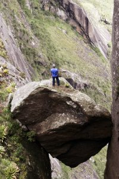

Torres de Bonsucesso
Quando se fala em montanha, subir está implícito. Mas, no caso das Torres de Bonsucesso, é subir, subir e
subir. A trilha é bastante íngreme, com desnível de aproximadamente 800 metros se o caminhante seguir até a
Torre Central e cerca de 1000 metros de diferença entre saída e chegada se o destino for a Torre Maior. Por
isso, logo depois de ingressar na floresta e cruzar um bonito bosque, já começa o “sobe, sobe, sobe”.
Os
primeiros 1,5 quilômetros são na sombra, com terreno úmido e consequentemente mais gostoso de ser
percorrido. Ao acessar a primeira crista de montanha, entra em cena o astro-rei. Porém, se o Sol pode se
tornar um “complicador”, com a vegetação mais baixa começa também o visual.
À direita e mais distante, já se avista a Serra dos Órgãos, do Escalavrado aos mais altos cumes, sem esquecer
logicamente do Dedo de Deus. À esquerda, as paredes das Torres de Bonsucesso começam a “hipnotizar” os
caminhantes. Imponentes, impactantes, impressionantes pelas formas e cores, que são mais bem destacadas
quando iluminadas pela luz solar.

Um pouco mais acima, a cerca de dois quilômetros de caminhada percorridos,
também convidam a um registro fotográfico as montanhas acessadas por outra magnífica região de Teresópolis,
o Vale dos Frades. Pedra D´Anta, Cabritos, Duas Serpentes, Bico Maior, Pedra do Índio… Ah, e também é visto
dessa trilha o Seio da Mulher de Pedra, mas de ângulo bem diferente do comum. Mesmo com tanta coisa bonita
para fotografar, inclusive da melhor maneira, que é guardar na memória, seguimos trilha acima, passando ao
lado do Ferro de Passar Roupa.
Quase no fim da trilha da Torre Central, outro atrativo é a “pedra entalada”, uma grande rocha, meio quadrada
e do tamanho de um ônibus, que fica presa entre a encosta e essa formação rochosa. As fotos no topo dela
ficam lindas, mas é preciso ter muita atenção, pois qualquer escorregão pode ser fatal.
A distância até esse topo é de pouco mais de três quilômetros, sendo percorrido aproximadamente um quilômetro
por hora por conta do desnível do terreno e tantas coisas bonitas a serem vistas e fotografadas. Querer
fazer em menos tempo é deixar de realmente enxergar um mundo encantado e suas diversas formas.
Embarque nessa aventura!